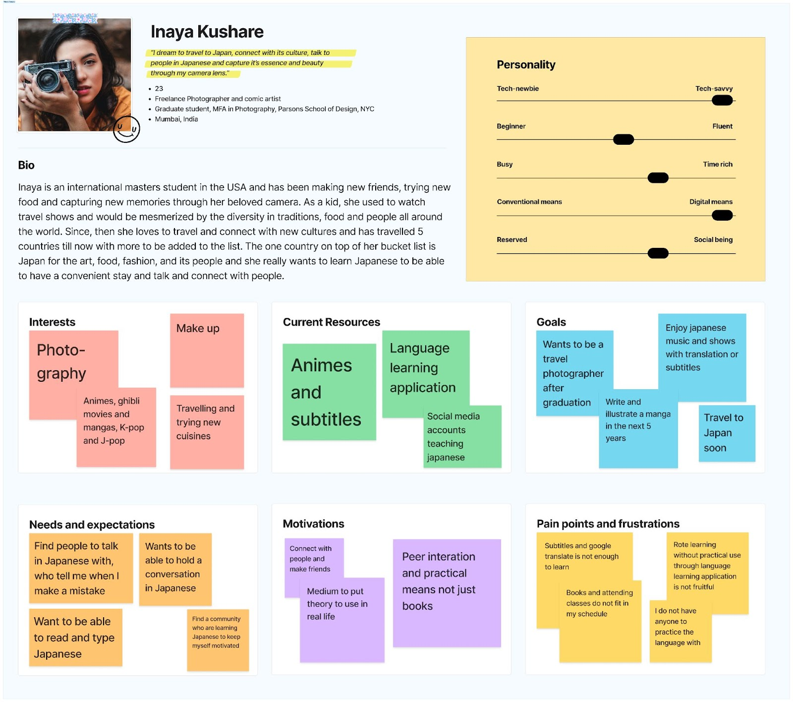
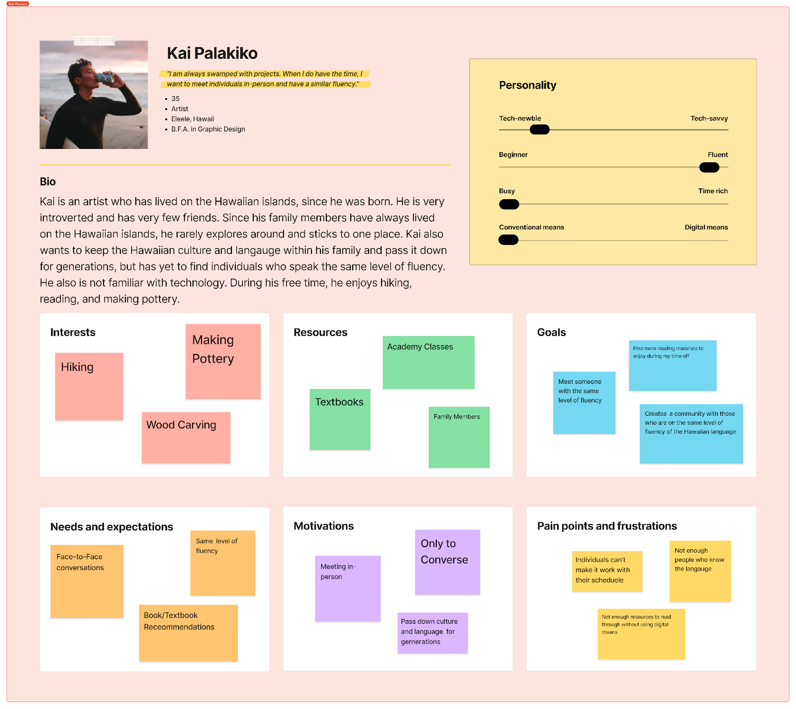

UX Projects
LingoTalk

Team Members
About
Problem Statement
Have you tried to learn a new language through a course or 'language learning' app and wound up forgetting about your goal or losing motivation? You may have even tried to find a partner to hold you accountable and keep you motivated, but finding someone can be a struggle. Or, if you did succeed in learning the language (congratulations!), you might have learned the grammar and formal version of the language. However, holding a conversation with someone is probably still challenging due to unfamiliarity with everyday language or different dialects.
Proposed Solution
Our solution is to connect with people who are also trying to learn a new language or practice their skills. Finding a community of people you enjoy speaking with will provide you with ample opportunity to practice and keep your motivation alive. This app will allow you to translate your messages in real-time while chatting if you need assistance. Thus, it can especially benefit amateurs who want to learn a new language without prior knowledge since they can immediately start having fun conversing and creating connections with others while building their vocabulary.
Stakeholders
Members of Our Stakeholders Include:
- People wanting to learn and practice a new language
- People who want to practice a language they know but don't use daily
- Travel enthusiasts
- Individuals who want to connect with people from around the world
Goals:
-
Our stakeholders are looking for a convenient way to:
- Learn a new language
- Practice newfound knowledge
- Maintain skills
Worries:
- Members of the target audience have busy lives and many responsibilities. As a result, it is hard for them to be consistent and maintain their motivation.
- In addition to the basics, they want to learn the colloquial language so that they can speak comfortably with others.
Involving and Communicating with Stakeholders:
- Our stakeholders will initially be involved through interviews, and progress will be communicated through emails.
- We will use our interviews to avoid miscommunication by providing definitions for ambiguous terms and asking clarifying questions to ensure that all parties are on the same page.
- We will also give interviewees ample opportunity to ask clarifying questions if they need to do so.
- Lastly, we will be communicating the design of LingoTalk to our stakeholders through usability testing.
Ideas:
-
Create an algorithm that pairs individuals based on their needs,
interests, and personalities
- Users first set up their profile by inputting time availability, level, etc., to be paired with others with similar selections
- Give users the ability to create forums to discuss topics of interest
- Allow users to give feedback to improve the application (customer service desk)
Contextual Inquiry
Demographics and Tools
Our project aims to make language learning easier by creating a digital community. As a result, our user demographic leans toward a younger audience. However, our interview demographic involved anyone who has ever wanted, tried, or succeeded in learning a different language. All the participants, aged 21 to 35, were from various academic or professional backgrounds, including students to full-time employees. The interviews were conducted via zoom calls and phone calls; some were in-person. The interview audios were transcribed over Zoom and Otter.ai but edited individually. The insights helped us find different perspectives and information that will drive our consecutive steps of this project.
Questionnaire
- Have you ever learned a new language?
- If yes,
- Why did you decide to?
- What are the resources you used?
- If you stopped midway, what struggles made you lose motivation/track?
- If you were able to learn, what were the things/features that helped you learn a new language?
- If no, (might not be the most preferred subject, but in a situation where we don't find someone else)
- Would you ever consider learning a new language?
- If yes, is there a reason you haven't started yet?
- If no, is there a reason you won't?
- What do you think will get you started?
- For yes, participants
- Have you used any applications to learn a new language? If yes, what applications have you used?
- What is your goal for learning a new language? (i.e., to read books, understand music lyrics, speak to non-English speaking grandparents, know the basics, just for fun, moving to another country, etc.)
- What do you think about connecting with people from other countries, including those who speak the language you are trying to learn?
- After explaining the app,
- People who have learned a language:
- Do you think our application might have helped you learn better?
- Will you use it to connect with people who speak that language?
- As a successful learner, what is a feature that can be added to help new learners?
- People who are trying/stopped trying:
- Do you think our application might help you learn or keep you motivated? If yes, how? If not, why?
Affinity Diagram
We used the Affinity diagram for organizing our notes from the interviews to understand the user's experiences, frustrations, and needs better. We used Zoom to discuss the notes and diagram and Figma to work on the diagram collaboratively. The following process was followed:
- The yellow notes were highlights and notes from individual interviews and transcripts.
- The yellow notes were sorted into groups based on common themes and labeled with blue post-its for the middle-level grouping.
- Once we had similar themes, it was easier to break them into smaller groups to identify specific and common information, which we clustered under purple post-it notes.
- Lastly, we arranged the blue post-its under top-level labels, which are the green post-its, that identified the user's experiences, frustrations, and expectations.
Findings
From the interviews and interpretation sessions, we gained new insights that we can apply to the design of our app. Our conclusion with the problems and motivations people have while learning a new language are:
- People mostly want to learn a new language to interact with more people or to enjoy entertainment from different cultures.
- Peer interaction and cultural exchange make the learning process engaging and motivating for learners.
- Consistent practice and using the language in the real world instead of only reading and watching led to better understanding and fast learning.
- People lose motivation either when they cannot find consistent learning methods or cannot find time in their schedule to dedicate to their learning.
- People are concerned about time zone differences, and some feel embarrassed to talk to people. This finding also made us realize the limitations of our idea.
Personas
To create our personas, we researched and considered the contextual inquiry's highest level of points. One primary, two secondary, and one anti-persona were among the four that we developed.
Primary Persona
Secondary Persona
Anti-Persona
Lo-Fi
We used two iterations to construct a low-fidelity prototype for our app, with each iteration being more refined regarding purpose, layout, and features than the one before. The pain areas, experience goals, and end goals of our user personas were used as the basis for prototyping.
Brainstorm
- Login/signup
- Email, password
- Profile Setup
- Profile pic, Username, Name (optional), Bio, Language you want to learn, Have the option to skip now/edit later
- Preferences/inquiry: (multi-screens)
- Native language, Timing they will be using the app/time zone, Daily or weekly goals/time for each day, Level of language, Interests
- Suggestions for connections
- People, Groups
- Feed (users can scroll around, join groups, recommendations, and discussions)
- View Posts, Comments, Like button, Create posts/groups
- Explore page
- Search field (add a button for groups/posts), contains 4 tabs (interests, groups, discussions, people)
- Create your own group/community/forum
- Group name, Bio, Policies, Privacy, Tags of Interests
- Create a post
- Group page
- Name, Bio, Tags, posts/ discussions (upvote or like system), People of the group, Add a discussion/posts
- Chat with connections
- Tap and hold feature, Two text bubbles (one original - one translation), Read aloud texts
- Profile Page
- Bio, Profile picture, Language learning, Native language (languages they know), Interest tags, Number of groups, Number of connections, Settings
- Bottom navigation
- Profile, Explore, Feed, Messages
Initial Paper Prototypes
After collective brainstorming, we took some time to create
individual sketches or paper prototypes of our ideas for each
frame. This allowed us to have different perspectives and options.
Additionally, the visuals helped us have better discussions.
Lo-Fi Prototypes
Lastly, we discussed the paper prototypes, made some changes to
reduce gaps in the user flow, and consecutively created wireframes
on Figma. The button below, which is followed by a preview of the
Figma file, will take you to the Lo-Fi prototype. Lastly, a few
essential screens can be seen in more detail.
Hi-Fi Prototype
After wireframing, the high-fidelity prototyping stage began by
working on color and type elements to create a consistent brand
identity. Through trial, error, and discussions, the following
style guide was created for the LingoTalk mobile application.
Returning our focus to the interactions and navigation, we started
enhancing buttons, adding additional frames, and including
animations to the prototype. The focus of LingoTalk is connecting
and chatting with others. As a result, the functionality of the
chat and explore features have more depth in comparison to other
features. We've excluded frames such as password recovery since
the design would follow standard conventions.
Additional settings were added to make it easier for users to
choose the languages they wish to see while chatting with
others.The questions asked during profile setup will allow the app
to make appropriate suggestions and populate the explore tab
initially. This helps to mitigate concerns, such as differences in
time zone, that were discovered during the contextual inquiry.
User Testing
Background
Each team member conducted a usability test with one participant, so our findings come from the feedback of four users. The users were asked to complete the following tasks during the usability test:
- Log in to your account and complete the setup process
- View the Home page
- From the home page, setup by creating a post
- From the home page, setup by creating a new group
- View the explore page
- View the chat page
- Check your latest message (should be Aidan Lee when the user clicks on Chat)
- Find how to listen to a message
- View the different chat displays for translation
Highlights
- Found the profile setup process smooth and easy to follow
- Quickly found home page, creating post and group icon, explore page, and most recent message
- Appreciated the idea of getting the option to choose how the chat would look like
- Figured out how to play audio immediately
Pain Points
- Some icons are too small to see right away (i.e. create post, chat icon)
- Icons are not consistent with one another (i.e. home page vs. group page posts)
- Concerned about privacy
- Did not know they could scroll down on suggestions
- Took some time to find translation settings
- Concerned with language the entire app is in
- Google translate or translation not always accurate - will there be moderators or translators to help?
- Chat settings titles were confusing
Next Iteration
After discussing findings from the user testing, the following list comprises some elements that we could incorporate in our next iteration of the prototype.
- Make some icons larger (i.e. create post, chat icon)
- Add concise information regarding privacy to setup (preferences) since people tend not to read privacy policy or terms and conditions
- Have a pop-up message explaining the chat boxes when new users click the chat icon for the first time
- Make icons more consistent throughout the application
Conclusion
Working on LingoTalk has been a great learning experience and has allowed us to work on different steps of the design process. A considerable aspect has been working and making decisions as a team, which has helped us prepare to work with others in a professional setting. We've also learned from past mistakes, such as incorrectly conducting the contextual inquiry. It would have been more appropriate to ask our participants to walk us through the language learning apps they use. Since our sample size for user testing is small and not representative of our entire target audience, conducting more usability tests would lead to better and possibly more suggestions for the next iteration of LingoTalk.